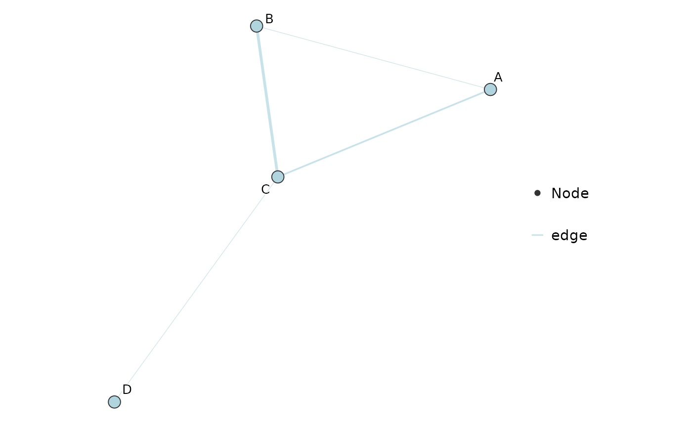
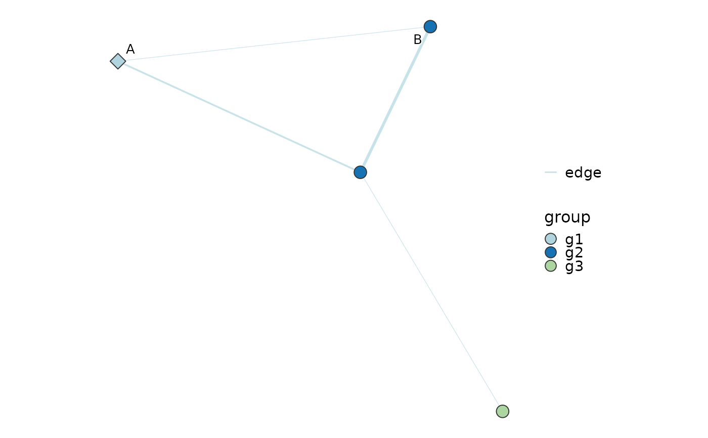

Network Plot
Usage
NetworkPlot(
edge,
node = NULL,
from = "from",
to = "to",
weight = "weight",
node_name = NULL,
edge_group = NULL,
edge_palcolor = NULL,
edge_palette = "Chinese",
node_group = NULL,
node_palcolor = NULL,
node_palette = "Chinese",
node_shape = NULL,
node_shape_values = NULL,
node_size = NULL,
node_size_range = NULL,
layout = c("fr", "kk", "circle", "none"),
node_coord = c("x", "y"),
edge_width = c(0.2, 1),
edge_width_legend = FALSE,
edge_alpha = 0.7,
edge_curvature = 0,
edge_arrow = FALSE,
label = TRUE,
label_nodes = NULL,
label.size = 3.5,
label_size = NULL,
label_face = NULL,
label.fg = "black",
label.bg = "white",
label.bg.r = 0.1,
highlight = NULL,
highlight.color = "red",
highlight.size = 6,
title = NULL,
aspect.ratio = 1,
legend.position = "right",
theme_use = "theme_this",
theme_args = list(),
seed = 42
)Arguments
- edge
A data frame with one row per edge.
- node
Optional data frame with one row per node. Node identifiers are taken from
node_name, from a column namedname, or from the row names.- from, to
Column names in
edgeholding the edge endpoints.- weight
Column name in
edgeholding edge weights. UseNULLfor unweighted edges.- node_name
Column name in
nodeholding node identifiers.- edge_group
Optional column name in
edgeused to colour edges.- edge_palcolor, edge_palette
Custom colors or palette name for
edge_group.- node_group
Optional column name in
nodeused to fill nodes.- node_palcolor, node_palette
Custom colors or palette name for
node_group.- node_shape
Optional node shapes. Either a column name in
nodeor a named vector of grid shapes keyed by node name.- node_shape_values
Named vector mapping
node_shapelevels to shapes.- node_size
Optional node sizes. Either a column name in
nodeor a numeric value used for every node.- node_size_range
Optional size range used to rescale a numeric column supplied to
node_size;NULLkeeps the supplied values.- layout
Layout used when
nodehas no coordinates. One of"fr","kk","circle"or"none".- node_coord
Column names in
nodeholding x and y coordinates. Used whenlayout = "none".- edge_width
Width range for the edges;
NULLkeeps the ggplot2 default width scale.- edge_width_legend
Whether to show the edge width legend. Default is
FALSE.- edge_alpha
Edge alpha.
- edge_curvature
Edge curvature passed to
geom_curve;0draws straight segments.- edge_arrow
Whether to draw arrow heads on edges.
- label
Whether to draw node labels.
- label_nodes
Nodes to label. Default labels every node.
- label.size
Label text size.
- label_size
Optional per-node label sizes. Either a column name in
node, a named vector keyed by node name, orNULLto uselabel.size.- label_face
Optional per-node label faces. Either a column name in
node, a named vector keyed by node name, orNULLfor plain text.- label.fg, label.bg, label.bg.r
Label foreground color, outline color and outline radius.
- highlight
Optional node names drawn with an extra ring.
- highlight.color, highlight.size
Color and size of the highlight ring.
- title
Optional plot title.
- aspect.ratio
Aspect ratio passed to the theme.
- legend.position
Legend position passed to the theme.
- theme_use
Theme function name, one of
"theme_this","theme_blank"or"theme_void".- theme_args
A named list of arguments passed to
theme_use.- seed
Optional integer seed for the layout.
Examples
edge <- data.frame(
from = c("A", "A", "B", "C"),
to = c("B", "C", "C", "D"),
weight = c(1, -2, 3, 1)
)
NetworkPlot(edge)

node <- data.frame(
name = c("A", "B", "C", "D"),
group = c("g1", "g2", "g2", "g3"),
shape = c("hub", "leaf", "leaf", "leaf")
)
NetworkPlot(
edge,
node = node,
node_group = "group",
node_shape = "shape",
node_shape_values = c("hub" = 23, "leaf" = 21),
label_nodes = c("A", "B")
)
